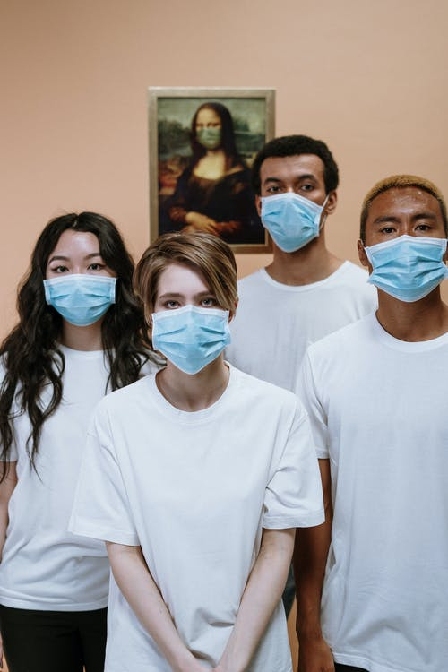

HOW PEOPLE CAN ENGAGE THEMSELVES DURING THIS PANDEMIC
As we know this pandemic was unpredictable to everyone and it has affected a large population of people.It has made people loose their jobs and many people hopeless. During this time it is important to keep ourselves busy by benefits so that we can help the ones who are needy during this pandemic. As youths it has really affected us because there is alot of leisure time and youths are wondering what they should endulge themseves in.d they don’t want your pity.
Youths can take the action of teaching people the dangers of Covid-19,this can be done by using online platforms like whatsapp forming groups and educating people the safety of observing the rules of covid-19,this will really help people to know the importance of staying safe.
Hosting zoom party meetings where you interact with friends and discuss important things, hold ted talk ,have a mentor who will advise you to do particular thing in your career path. Also learning online which engages your mind to be active and enables mind growth.Looking for online platforms to showcase your skills,if you have skills in coding, making designs you can look for a online plattform and showcase whta you have .This can build connections and earn you money because you can get potential employers during this time.
- Doing and practising exercise
- Mentoring people on what you are good at